vignettes/customising-map-appearance.Rmd
customising-map-appearance.RmdIn this article we will describe different ways to customise the appearance of an antigenic map with for example different point colours, shapes and sizes. We’ll first describe the key functions and then go through an example.
The main functions for controlling point style parameters are:
agFill() and srFill() for controlling the
antigen and sera fill colouragOutline() and srOutline() for
controlling the antigen and sera outline colouragOutlineWidth() and srOutlineWidth() for
controlling the antigen and sera outline stroke widthagSize() and srSize() for controlling the
antigen and sera point sizesagShape() and srShape() for controlling
the antigen and sera point shapesagShown() and srShown() for controlling
whether antigen and serum points are visibleNote that the primary supported shapes values are “circle”, “box” and “triangle”, but see below for details on further map customisation.
There is also the function ptDrawingOrder() which
controls the order in which points are plotted according to their index
in the map (numbering the antigens first then the sera).
library(Racmacs)
map <- read.acmap(system.file("extdata/h3map2004.ace", package = "Racmacs"))
# Rotate the map
map <- rotateMap(map, 210)
# Colour all the antigens grey
agFill(map) <- "grey50"
# Colour all the vaccine antigens in red and increase their size
vaccine_strains <- c(
"PC/1/73",
"VI/3/75",
"TE/1/77",
"BA/1/79",
"PH/2/82",
"LE/360/86",
"SH/11/87",
"SI/2/87",
"BE/353/89",
"GU/54/89",
"BE/32/92",
"SD/9/93",
"JO/33/94",
"WU/359/95",
"SY/5/97",
"MW/10/99",
"FU/411/02"
)
vaccine_ags <- agNames(map) %in% vaccine_strains
agFill(map)[vaccine_ags] <- "red"
agSize(map)[vaccine_ags] <- 8
# Bring the antigens to the top of the plot
ptDrawingOrder(map) <- c(
seq_len(numSera(map)) + numAntigens(map), # Draw sera first
which(!vaccine_ags), # Then draw non vaccine ags
which(vaccine_ags) # The draw vaccine ags
)
# Plot the map
plot(map)